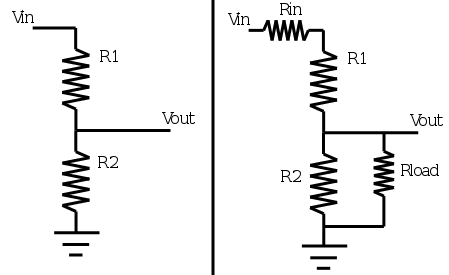

This is a special resistor voltage divider calculator. You tell it what is the maximum expected input voltage and the maximum desired output voltage, and a list of all the resistors you already own, and it automatically picks the two resistors you should use. This is useful because it means you don't have to buy a specific resistor for a project, and you don't have to calculate for every single resistor you own. Continue below to use
List of Resistors
Put a list of all the resistors you would like to use, use numbers only, separated by spaces or a new line. Units don't matter as long as the units are all the same.
I came up with this tool when I was trying to use a ADC of a microcontroller to read battery voltage. The microcontroller had an internal voltage reference option of 1.8V, and my battery pack could have been a fully charged 3S li-po pack, which meant 3 * 4.2 = 12.6V. I had enough resistors in my collection that I knew there must've been two values that got an output close to 1.8V so I wrote this tool to help me pick. Remember, you don't need to get an result exactly equal to the reference voltage of the ADC if your microcontroller can do some simple math to calculate the true reading.
This tool is open source, written in javascript, so you can view the source
The resistance units accepts syntax like:
The ohm (omega) symbol is not allowed, the word "ohm" is not allowed, and spaces are not allowed. Syntax like 4K456.7 is invalid.
Voltage is always specified in volts, in plain decimal format only.